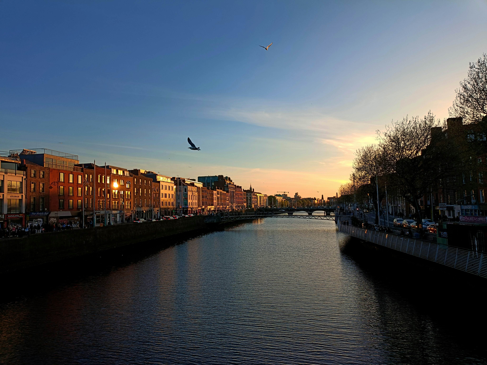

Sua próxima viagem:
Conheça Dublin
Dublin, a vibrante capital da Irlanda, oferece de tudo, desde bibliotecas históricas de prestígio mundial até os pubs mais tradicionais e autênticos da Europa. Aqui, exploramos o coração da Ilha Esmeralda e descobrimos sua rica herança cultural e tecnológica.
Para os amantes da Ilha Esmeralda
Descubra 3 destinos imperdíveis em Dublin
As atrações de Dublin vão desde bibliotecas e castelos medievais que narram séculos de história até parques urbanos vastos e vibrantes. Esta capital litorânea oferece cultura o ano todo — famílias podem explorar museus interativos, entusiastas de história podem percorrer os pátios do Trinity College e os amantes da natureza podem desfrutar de caminhadas pelas falésias de Howth.
A arquitetura georgiana e as pontes icônicas que cruzam o Rio Liffey oferecem cenários impressionantes que encantam os fotógrafos. Dublin é um destino que combina perfeitamente o charme histórico com a energia contemporânea, tornando-se um local imperdível para qualquer viajante.

1. Trinity College & Old Library
O Trinity College é a universidade mais antiga da Irlanda, fundada em 1592, e um verdadeiro refúgio de conhecimento no coração de Dublin. Sua principal atração é a Long Room da Antiga Biblioteca, que abriga o famoso Livro de Kells.
Bom para:
- História

2. Castelo de Dublin
Localizado em um sítio histórico que já foi uma fortaleza viking, o Castelo de Dublin serviu como sede do governo britânico por séculos. Hoje, o complexo é usado para cerimônias de estado e oferece tours por seus luxuosos apartamentos.
Bom para:
- História
3. Phoenix Park
O Phoenix Park é um dos maiores parques urbanos da Europa. Além de abrigar o Zoológico de Dublin, o parque é famoso por sua manada de gamos selvagens. É o local ideal para um piquenique ou longas caminhadas.
Bom para:
- Casais
- Famílias
- Orçamento

4. Howth Cliff Walk
Localizado na península de Howth, este vilarejo de pescadores oferece uma das trilhas costeiras mais bonitas da Irlanda. O caminho pelas falésias proporciona vistas espetaculares do Mar da Irlanda e do Farol Baily. Após a caminhada, o porto é o lugar perfeito para saborear frutos do mar frescos e observar as focas que costumam aparecer por lá.
Bom para:
- Natureza
- Aventura
- Orçamento

5. Temple Bar District
Conhecido como o bairro cultural de Dublin, o Temple Bar é famoso por suas ruas de paralelepípedos, pubs icônicos de fachada vermelha e música tradicional ao vivo. Além da vida noturna vibrante, a área abriga diversas galerias de arte contemporânea, mercados de rua aos finais de semana e centros culturais, sendo o coração pulsante da cidade.
Bom para:
- Cultura
- Vida Noturna
- Casais
As melhores coisas para fazer em Dublin mostram a reputação da cidade como um importante polo cultural e tecnológico na Europa. Frequentemente vista como o coração da Ilha Esmeralda, você experimentará uma atmosfera única em termos de hospitalidade e música, já que a cidade recebe um público jovem e cosmopolita o ano todo.